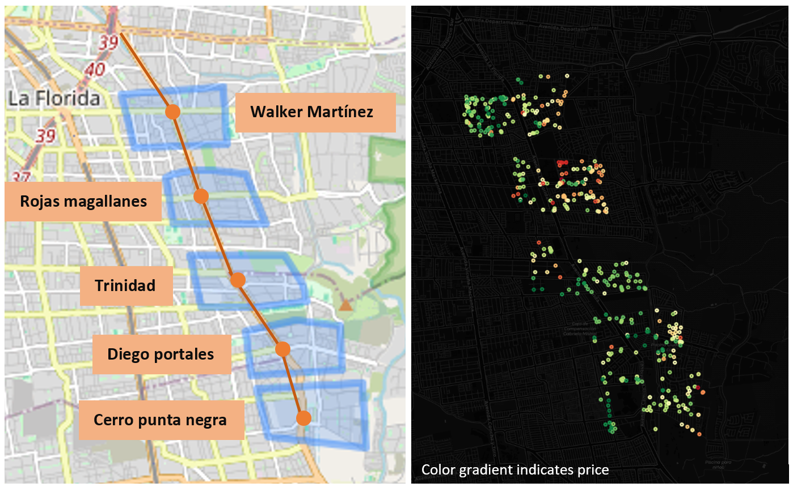
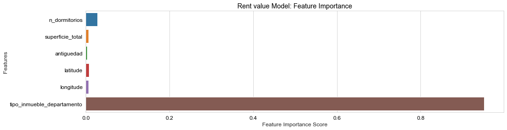
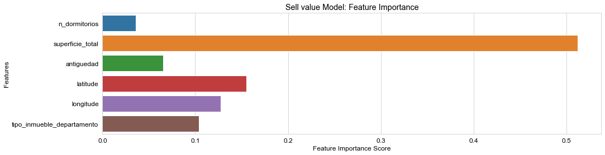
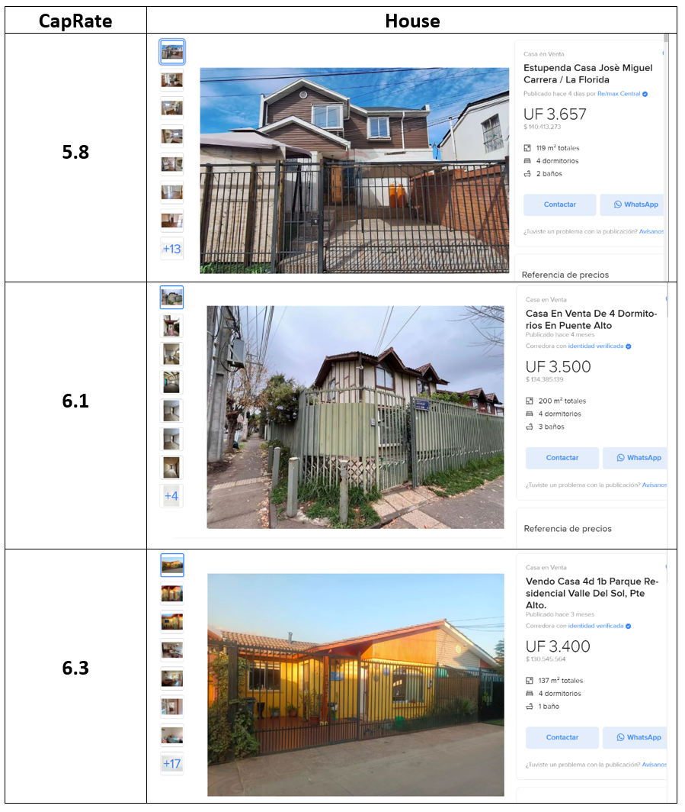

ML for real estate
Buscar casa puede convertirse en una odisea diaria. Todos hemos pasado por la interminable búsqueda de la vivienda perfecta. Y en muchos casos, después de horas de navegar por portales inmobiliarios, terminamos creando tablas en Excel para comparar precios, analizar posibles inversiones, y todo sin estar seguros de haber encontrado la mejor oferta. Es un proceso agotador

Por eso, decidí transformar ese caos en un reto personal y crear un software que simplifique este proceso. Mi objetivo: hacer más eficiente la búsqueda de propiedades , y como meta inicial, he decidido enfocarme en una zona específica, La Florida. Donde pasará la futura Línea 9 del metro. Esto agrega un toque extra de emoción, ya que la infraestructura del transporte suele elevar el valor de las propiedades, y yo quiero encontrar las mejores oportunidades antes de que los precios se disparen.
nos interesa especificamente las futuras estaciones:
- Avenida Camilo Henríquez con Cerro Punta Negra (Puente Alto)
- Avenida Camilo Henríquez con Diego Portales (La Florida y Puente Alto)
- Avenida La Florida con Trinidad (La Florida y Puente Alto)
- Avenida La Florida con Rojas Magallanes (La Florida)
- Avenida La Florida con Walker Martínez (La Florida)
Para abordar este problema necesitamos data!. La mejor forma de obtenerla es mediante webscrapping en PortalInmobiliario. Estructuré el proyecto en dos grandes bloques: una aplicación/frontend que se ejecuta en un Jupyter Notebook y el backend en una clase maestra que orquesta múltiples funcionalidades. El corazón del sistema es la base de datos, el lugar donde almaceno y organizo toda la información recolectada. Además, no hay que olvidar el uso de proxys, porque portalinmobiliario no es fan de que le consulten demasiadas veces

El flujo es sencillo: ejecutas una celda en Jupyter para añadir un nuevo mapa a la base de datos. Luego, con el id_unico asociado al mapa recien agregado, comenzamos la descarga. (Considera agregar tu proveedor de proxy con ip's dinamicas si pretendes descargar mas de 500 propiedades)
WSPI = WebScraperPortalInmobiliario()# to add an empty new cluster
WSPI.insert_new_cluser_map("your_zone_cluster_name",None)# list all existing clusters in db
WSPI.list_db_maps()# to select and save the geopolygon of your area (replace with your selected id)
WSPI.vis_map(selected_mapID=5)# start the download
WSPI.start_download(selected_mapID=5)

Una vez que los datos han sido descargados, el sistema te ofrece un acceso fácil y directo a ellos, permitiendo realizar análisis instantáneos. Lo primero que haremos será entrenar un modelo sencillo que permita estimar el valor de una propiedad, tanto en arriendo como en venta, para cualquier sector. La idea es que los sectores con poca o nula información puedan ser estimados a partir de los datos disponibles en otras áreas. Se entrenaran 2 modelos 1 para arriendo y otro para venta
El siguiente paso consiste en evaluar qué zonas ofrecen las mejores oportunidades. Una métrica útil para esto es el CapRate, que nos indica, de manera aproximada, la rentabilidad de nuestra inversión. Según expertos en el tema, un CapRate superior al 6% podría considerarse una buena oportunidad de inversión en la situación actual, siendo aún mejor cuanto más alto sea. Utilizamos el modelo recién entrenado para estimar el valor de la propiedad en el sector de interés, obteniendo tanto el valor de arriendo como el de venta, según la tipología de la propiedad.
\( \text{CapRate [%]} = \frac{\text{montly rent} \times 12}{\text{real estate value}} \times 100 \)
Analizando los resultados
La siguiente imagen muestra la distribución de precios de las propiedades por estación. Se observa una tendencia a la baja en los precios hacia Puente Alto. Además, se identifica un foco de precios altos en las cercanías de la estación de metro Rojas Magallanes, posiblemente debido a la presencia de un centro comercial, la accesibilidad a servicios y la relativa seguridad de la zona. Otro punto notable es que los precios de las propiedades tienden a aumentar hacia el oriente, lo cual es un patrón intuitivo.

Analizando las distribuciones del pairplot y relaciones entre los atributos , podemos obtener conclusiones interesantes:
- La oferta de arriendos de casas es significativamente menor que la de departamentos, lo que sugiere una alta demanda por este tipo de propiedad.
- La mayoría de los departamentos tienen 2 dormitorios, mientras que las casas suelen tener 3.
- Existe una alta oferta de casas a la venta con más de 25 años de antigüedad.
Pasando a los resultados del modelo recién entrenado, se opto por utilizar un modelo basado en arboles de decisión para que la importancia de los atributos se autoajustara internamente, también para ahorrarnos la posible estandarización de variables. Se uso el estado del arte de XGBoosting en su modelo regresor.
El modelo de valor de arriendo entrega un RMSE de 2.1 UF y un R2 de 0.88 sobre data de testeo no vista durante el entrenamiento.
Si observamos la importancia de variables en arriendo, se puede ver que el tipo de inmueble será el gran diferenciador. En segundo lugar, vendría el número de dormitorios. Por lo tanto, para la estimación de el arriendo el numero de dormitorios y el tipo de inmueble serán los grandes influenciadores para el precio. Es interesante que la antigüedad es la variable que menos pondera a la hora de arrendar, mas no así en venta como se verá a continuación.

Para el modelo de valor de venta obtuvimos un RMSE de 497 UF y un R2 de 0.86.
En el caso de la importancia de variables vemos un panorama totalmente distinto respecto al modelo de arriendo. Lo que domina la predicción del precio de venta de una vivienda será la superficie total y su ubicación. Y la que menos ponderará será el número de dormitorios.

Los hallazgos hacen sentido ya que el propósito del arriendo es la funcionalidad inmediata mientras que para la venta de contabiliza el potencial de largo plazo dentro del precio. Ambos modelos podrian mejorarse si se tuviera data historica de cada sector, con esta herreamienta bastaria con ejecutar de forma periodica mediante por ejemplo, un crontab. Tambien podria ser interesante añadir un modelo de vision que aprenda a cuantificar las imagenes de casas modernas/buenas condiciones lo cual tambien podria tener relevancia a la hora de definir el precio del inmueble.
Con los modelos entrenados se estima la renta y la venta, para una ubicación dada, y se ingresan los resultados en la fórmula de CapRate. Con esos valores se rankean las mejores propiedades, filtrando el precio máximo que estamos dispuestos a pagar.
Jugando con los filtros se llega a que el rango ideal de CapRate está entre 5% y 7%. Se omiten los CapRate demasiado elevados ya que están asociados a casas con precarias condiciones o muy antiguas, lo que implicaría una alta inversión en reparaciones y acondicionamiento para habilitar su funcionamiento. También se filtra por número de habitaciones mínimas, que en este caso es de 3.
Las mejores propiedades basadas en estos filtros recién expuestos son las siguientes:

Para finalizar se podría realizar un análisis de la curva de amortización, intereses y deuda para encontrar el mejor momento para vender la propiedad y obtener los mayores retornos posibles. Queda pendiente para una futura ampliación de este trabajo. Puedes encontrar todo perfectamente documentado en mi github.